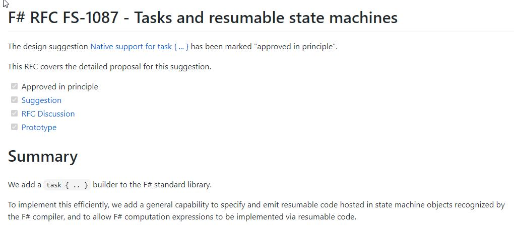

Multiple items
type Async
static member AsBeginEnd : computation:('Arg -> Async<'T>) -> ('Arg * AsyncCallback * obj -> IAsyncResult) * (IAsyncResult -> 'T) * (IAsyncResult -> unit)
static member AwaitEvent : event:IEvent<'Del,'T> * ?cancelAction:(unit -> unit) -> Async<'T> (requires delegate and 'Del :> Delegate)
static member AwaitIAsyncResult : iar:IAsyncResult * ?millisecondsTimeout:int -> Async<bool>
static member AwaitTask : task:Task -> Async<unit>
static member AwaitTask : task:Task<'T> -> Async<'T>
static member AwaitWaitHandle : waitHandle:WaitHandle * ?millisecondsTimeout:int -> Async<bool>
static member CancelDefaultToken : unit -> unit
static member Catch : computation:Async<'T> -> Async<Choice<'T,exn>>
static member FromBeginEnd : beginAction:(AsyncCallback * obj -> IAsyncResult) * endAction:(IAsyncResult -> 'T) * ?cancelAction:(unit -> unit) -> Async<'T>
static member FromBeginEnd : arg:'Arg1 * beginAction:('Arg1 * AsyncCallback * obj -> IAsyncResult) * endAction:(IAsyncResult -> 'T) * ?cancelAction:(unit -> unit) -> Async<'T>
static member FromBeginEnd : arg1:'Arg1 * arg2:'Arg2 * beginAction:('Arg1 * 'Arg2 * AsyncCallback * obj -> IAsyncResult) * endAction:(IAsyncResult -> 'T) * ?cancelAction:(unit -> unit) -> Async<'T>
static member FromBeginEnd : arg1:'Arg1 * arg2:'Arg2 * arg3:'Arg3 * beginAction:('Arg1 * 'Arg2 * 'Arg3 * AsyncCallback * obj -> IAsyncResult) * endAction:(IAsyncResult -> 'T) * ?cancelAction:(unit -> unit) -> Async<'T>
static member FromContinuations : callback:(('T -> unit) * (exn -> unit) * (OperationCanceledException -> unit) -> unit) -> Async<'T>
static member Ignore : computation:Async<'T> -> Async<unit>
static member OnCancel : interruption:(unit -> unit) -> Async<IDisposable>
static member Parallel : computations:seq<Async<'T>> -> Async<'T []>
static member RunSynchronously : computation:Async<'T> * ?timeout:int * ?cancellationToken:CancellationToken -> 'T
static member Sleep : millisecondsDueTime:int -> Async<unit>
static member Start : computation:Async<unit> * ?cancellationToken:CancellationToken -> unit
static member StartAsTask : computation:Async<'T> * ?taskCreationOptions:TaskCreationOptions * ?cancellationToken:CancellationToken -> Task<'T>
static member StartChild : computation:Async<'T> * ?millisecondsTimeout:int -> Async<Async<'T>>
static member StartChildAsTask : computation:Async<'T> * ?taskCreationOptions:TaskCreationOptions -> Async<Task<'T>>
static member StartImmediate : computation:Async<unit> * ?cancellationToken:CancellationToken -> unit
static member StartWithContinuations : computation:Async<'T> * continuation:('T -> unit) * exceptionContinuation:(exn -> unit) * cancellationContinuation:(OperationCanceledException -> unit) * ?cancellationToken:CancellationToken -> unit
static member SwitchToContext : syncContext:SynchronizationContext -> Async<unit>
static member SwitchToNewThread : unit -> Async<unit>
static member SwitchToThreadPool : unit -> Async<unit>
static member TryCancelled : computation:Async<'T> * compensation:(OperationCanceledException -> unit) -> Async<'T>
static member CancellationToken : Async<CancellationToken>
static member DefaultCancellationToken : CancellationToken
Full name: Microsoft.FSharp.Control.Async
--------------------
type Async<'a> = ('a -> unit) -> unit
Full name: index.Async<_>
type unit = Unit
Full name: Microsoft.FSharp.Core.unit
val async : AsyncBuilder
Full name: Microsoft.FSharp.Core.ExtraTopLevelOperators.async
val consumer : obj
val asyncOp : Async<unit>
Full name: index.asyncOp
static member Async.Sleep : millisecondsDueTime:int -> Async<unit>
val printfn : format:Printf.TextWriterFormat<'T> -> 'T
Full name: Microsoft.FSharp.Core.ExtraTopLevelOperators.printfn
static member Async.RunSynchronously : computation:Async<'T> * ?timeout:int * ?cancellationToken:System.Threading.CancellationToken -> 'T
static member Async.StartAsTask : computation:Async<'T> * ?taskCreationOptions:System.Threading.Tasks.TaskCreationOptions * ?cancellationToken:System.Threading.CancellationToken -> System.Threading.Tasks.Task<'T>
val bytes : obj
static member Async.AwaitTask : task:System.Threading.Tasks.Task -> Async<unit>
static member Async.AwaitTask : task:System.Threading.Tasks.Task<'T> -> Async<'T>
static member Async.Parallel : computations:seq<Async<'T>> -> Async<'T []>
static member Async.Catch : computation:Async<'T> -> Async<Choice<'T,exn>>
val asyncSeqOp : obj
Full name: index.asyncSeqOp
val query : Linq.QueryBuilder
Full name: Microsoft.FSharp.Core.ExtraTopLevelOperators.query
val zip : p:'a -> s:'b -> Async<'a * 'b>
Full name: index.zip
val p : 'a
val s : 'b
val ids : int list
Full name: index.ids
val productsAsyncSeq : obj
Full name: index.productsAsyncSeq
val salesAsyncSeq : obj
Full name: index.salesAsyncSeq
module String
from Microsoft.FSharp.Core
Multiple items
type Format<'Printer,'State,'Residue,'Result> = PrintfFormat<'Printer,'State,'Residue,'Result>
Full name: Microsoft.FSharp.Core.Format<_,_,_,_>
--------------------
type Format<'Printer,'State,'Residue,'Result,'Tuple> = PrintfFormat<'Printer,'State,'Residue,'Result,'Tuple>
Full name: Microsoft.FSharp.Core.Format<_,_,_,_,_>
Programowanie asynchroniczne
Asynchronous Workflows
1:
|
type Async<'a> = ('a -> unit) -> unit
|
Asynchronous Workflows
1:
2:
3:
4:
5:
6:
7:
8:
|
async {
let! consumer = getConsumerAsync "consumerId"
if consumer.Status = Status.IsNew then
do! setPromotionAsync consumer
return true
else
return false
}
|
Async.RunSynchronously
blokuje obecny wątek i uruchamia asynchroniczne wyrażenie
1:
2:
3:
4:
5:
6:
7:
8:
9:
|
let asyncOp =
async {
do! Async.Sleep 500
printfn "Done!"
return ()
}
asyncOp
|> Async.RunSynchronously
|
Async.StartAsTask
uruchamia wyrażenie na puli wątków, wynikiem jest Task< T >
1:
2:
|
asyncOp
|> Async.StartAsTask
|
Async.AwaitTask
tworzy wyrażenie asynchroniczne, które uruchomi Task< T > z C#
1:
2:
3:
4:
|
async {
let! bytes = File.ReadAllBytesAsync("file.txt") |> Async.AwaitTask
printfn "Bytes: %i" bytes.Length
}
|
Async.Sequential
tworzy wyrażenie async, które uruchamia po kolei listę wyrażeń async
1:
2:
|
[ async { return "A1" }; async { return "A2" } ]
|> Async.Sequential
|
Async.Parallel
tworzy wyrażenie async, które uruchamia równolegle listę wyrażeń async
1:
2:
|
[ async { return "A1" }; async { return "A2" } ]
|> Async.Parallel
|
Async.Catch
tworzy wyrażenie async, które dodatkowo przechwytuje wyjątki z poprzedniego wyrażenia do struktury Choice< T, exn >
1:
2:
|
asyncOp
|> Async.Catch
|
Async vs Task
wygenerowany kod |
chained continuation |
state machine |
zasada działania |
task generators |
hot task |
obsługa anulowania |
automatyczna |
manualna |
Asynchronous Sequences
AsyncSeq to prekursor IAsyncEnumerable
1:
2:
3:
4:
5:
6:
7:
8:
|
let asyncSeqOp =
asyncSeq {
let! consumerA = getConsumerAsync "A"
yield consumerA
let! consumerB = getConsumerAsync "B"
yield consumerB
}
|
AsyncSeq.ofAsyncEnum (toAsyncEnum)
Konwersja asynchronicznej sekwencji na typ C# IAsyncEnumerable
1:
2:
3:
4:
5:
|
query.GetAllProductsAsync()
|> AsyncSeq.ofAsyncEnum
|> AsyncSeq.map (fun x -> x.Price)
|> AsyncSeq.toAsyncEnum
// wynik: IAsyncEnumerable<Product>
|
AsyncSeq.traverseOptionAsync
Asynchroniczne przetwarzanie asynchronicznej sekwencji. W przypadku przetwarzania wyniku dającego None przetwarzanie jest przerywane.
1:
2:
3:
4:
|
getAllProductsAsync() // AsyncSeq<Product>
|> AsyncSeq.traverseOptionAsync (fun x -> tryGetSales(x.Id))
// Async<Sales option>
// wynik: Async<AsyncSeq<Sales> option>
|
AsyncSeq.zipWithAsyncParallel
Asynchronicznie łączy ze sobą wyniki obu asynchronicznych sekwencji w trybie współbieżnym
1:
2:
3:
4:
5:
6:
|
let zip p s = async { return (p, s) }
let ids = [1; 45; 55]
let productsAsyncSeq = getProducts ids
let salesAsyncSeq = getSales ids
AsyncSeq.zipWithAsyncParallel zip productsAsyncSeq salesAsyncSeq
// wynik: AsyncSeq<(Product,Sales)>
|
TaskBuilder.fs
The goal of this computation expression builder is to let you write asynchronous blocks that behave just like async methods in C# do.
1:
2:
3:
4:
5:
6:
7:
8:
9:
|
task {
do! Console.Out.WriteLineAsync("Enter a filename:")
let! name = Console.In.ReadLineAsync()
use file = File.CreateText(name)
for i in Enumerable.Range(0, 100) do
do! file.WriteLineAsync(String.Format("hello {0}", i))
do! Console.Out.WriteLineAsync("Done")
return name
}
|
github
Ply
Ply is a high performance TPL library for F#. The goal of Ply is to be a very low overhead Task abstraction like it is in C#.
github
Hopac
Hopac provides a programming model that is heavily inspired by Joh n Reppy's Concurrent ML language. Other languages that provide similar or related models include Racket, Clojure core.async, and Go.
github
Natywne wsparcie Task

RFC